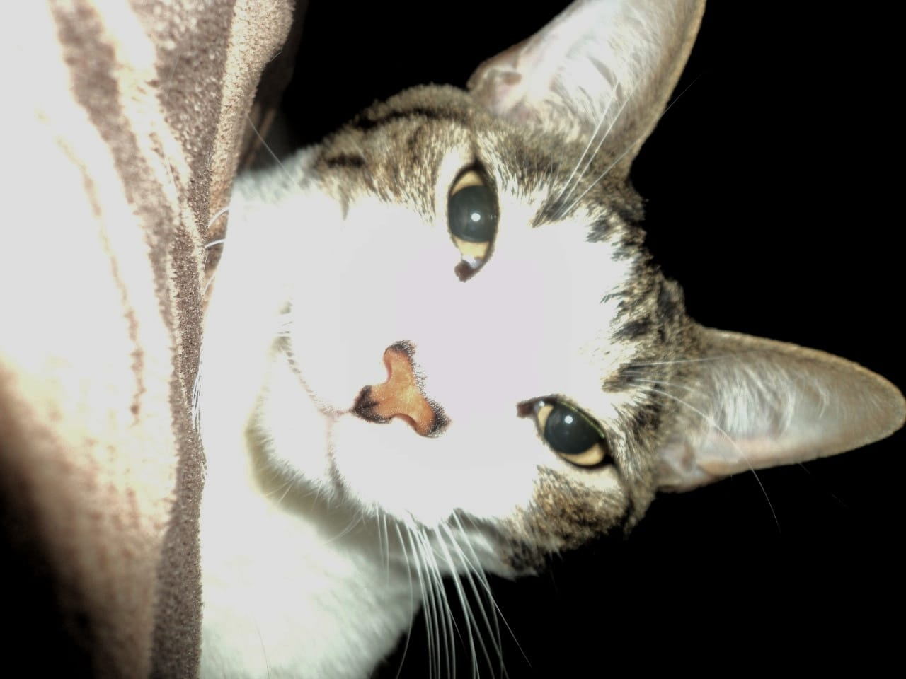
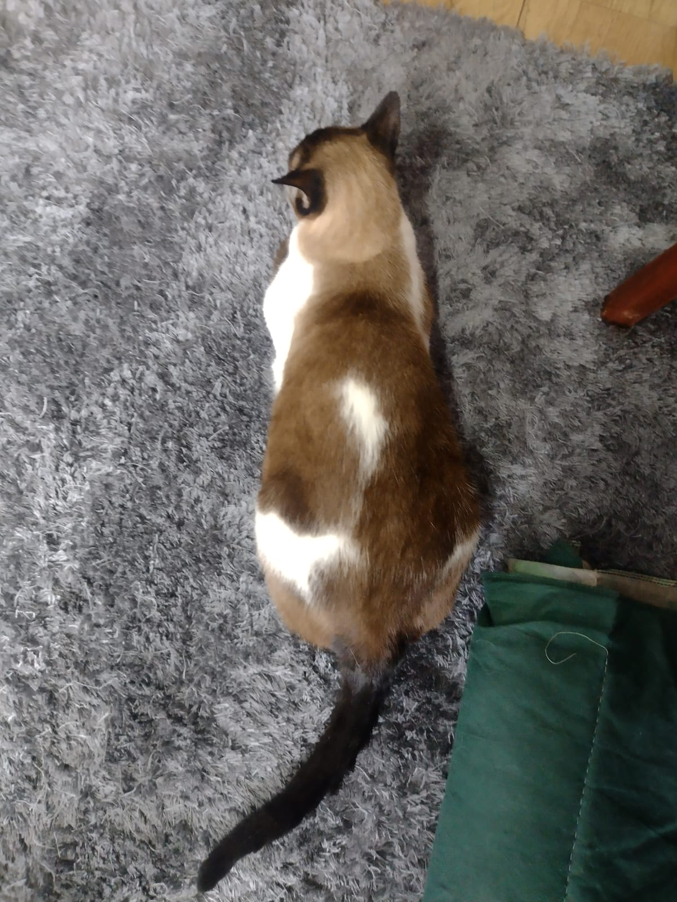
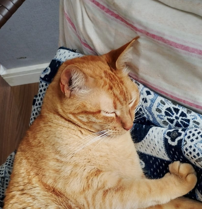
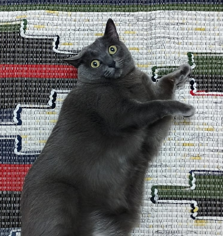
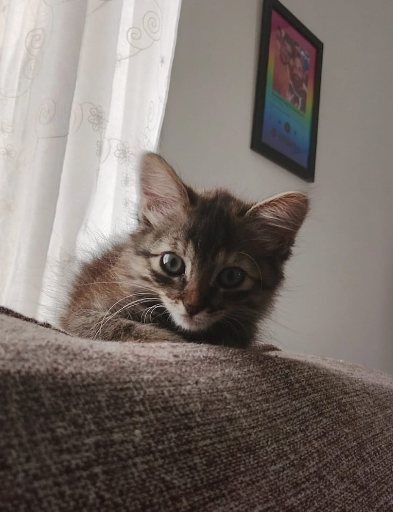
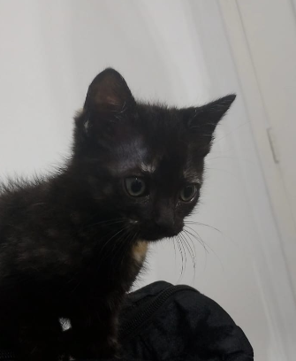
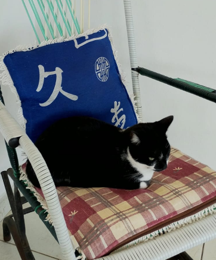
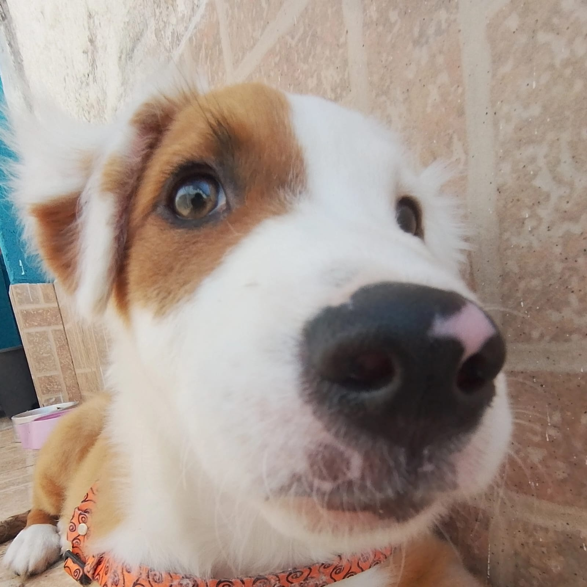
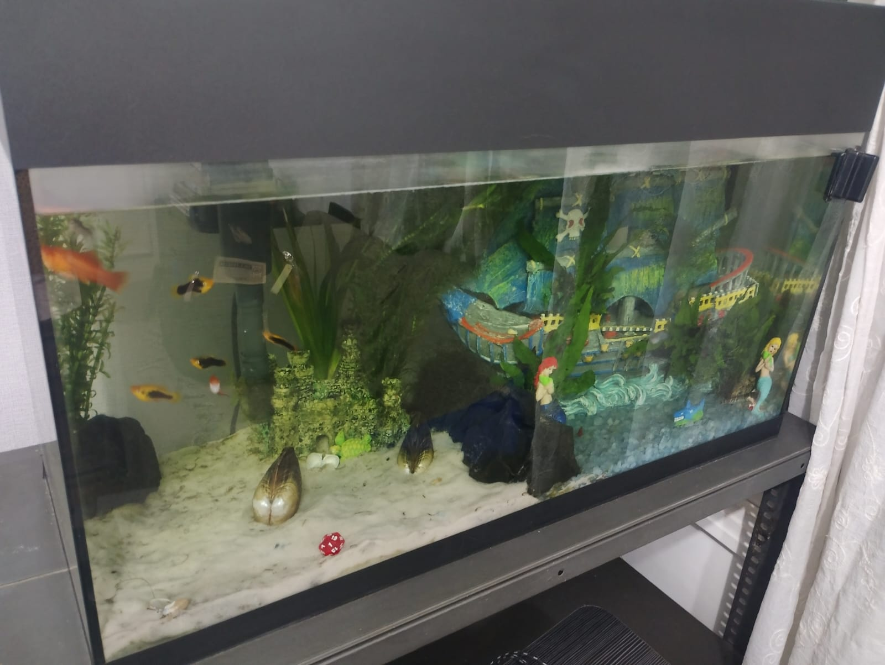

Animais!
Sendo um pouco dramático mas verdadeiro, um dos poucos motivos da minha existencia nesse planeta são meus bichinhos de estimação. Agora vou mostrar cada um deles!
Gatos da casa da minha mãe!

Bruce, meu gato que fugiu por 4 meses e voltou.

Kiki, ela pesa 6 ou 7 quilos.
Gatos da casa do meu pai!

Quimdim, ele é bravo e come danoninho.

Misty, pesa 7 ou 6 quilos.

Bowie, por ela ser bebê, nao se sabe o seu gênero.

Elvira, ela é bem fina.
Animais da casa da minha tia!

Mully, ela é bem falante.

Leon, ele morde bastante.
Menções honrosas!
Sofí e Sami: as cachorrinhas da minha vó que moram no meu sítio.

Todos os peixes do meu aquario, tem vários.